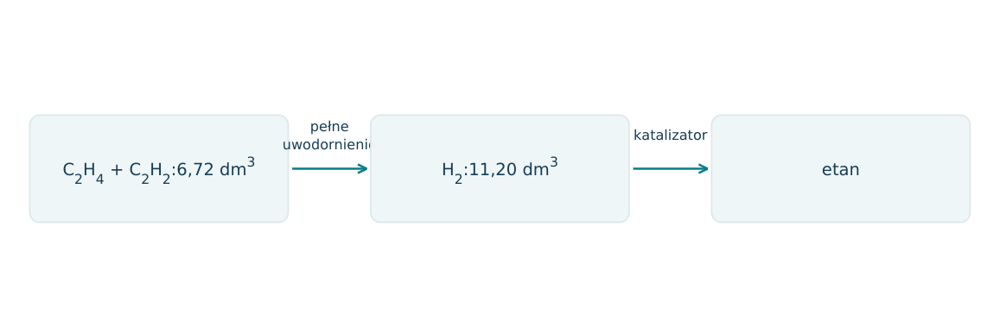
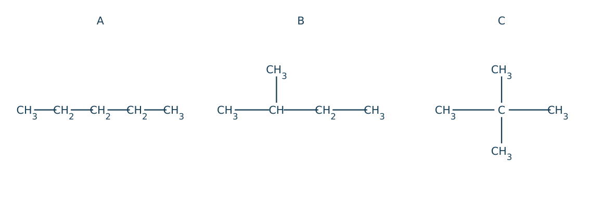
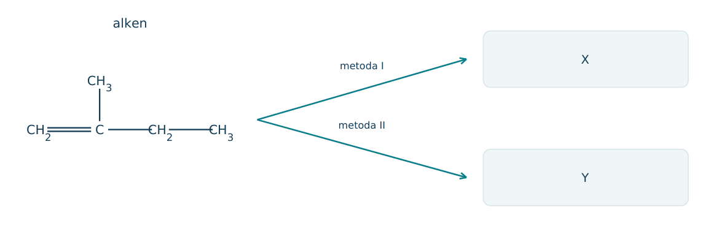
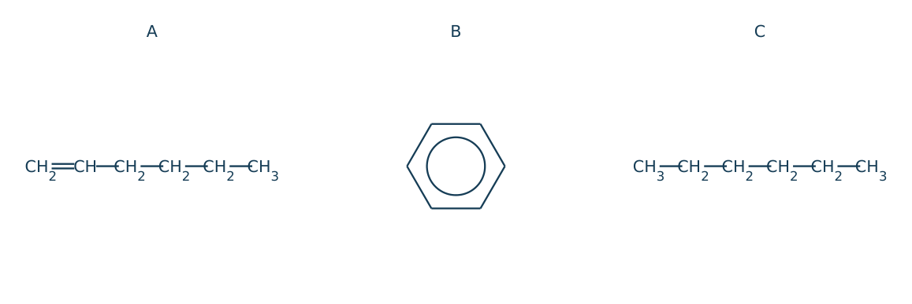
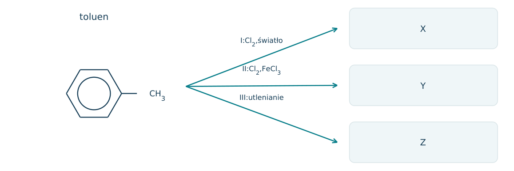
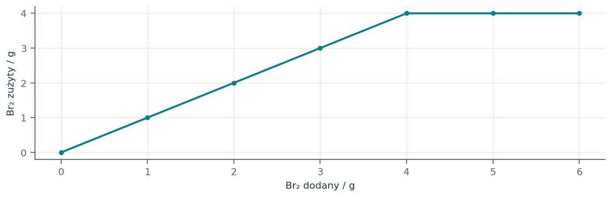
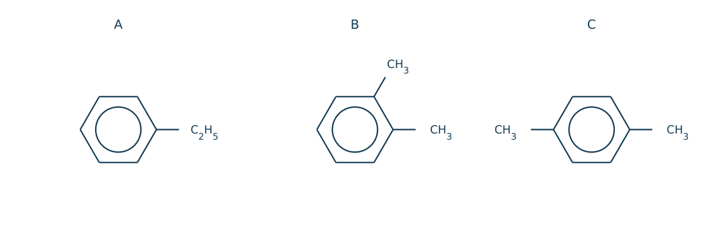

16.01 · 1 pkt
Podaj wzory półstrukturalne but-1-enu i but-2-ynu.
Rozwiązanie
- CH2=CHCH2CH3 i CH3C≡CCH3.
50 zadań · 115 pkt · odpowiedzi rozwijane po samodzielnej próbie
← KatalogZadania PDFRozwiązania PDFDane do obliczeń: H 1; C 12; N 14; O 16; Na 23; Mg 24; Al 27; P 31; S 32; Cl 35,5; K 39; Ca 40; Cr 52; Mn 55; Fe 56; Cu 64; Zn 65; Ag 108; Br 80; I 127; Ba 137 (g/mol). NA = 6,02·1023 mol-1. Vm = 22,4 dm3/mol w warunkach normalnych (0°C, 1013 hPa). W 25°C Kw = 10-14. Dane podane w zadaniu mają pierwszeństwo.
Podaj wzory półstrukturalne but-1-enu i but-2-ynu.
Oceń zdania A i B, wpisując P albo F. Każde zdanie fałszywe popraw lub krótko uzasadnij. A: Eten może ulegać addycji Br2. B: Benzen bez katalizatora zachowuje się w wodzie bromowej identycznie jak eten.
Podaj hybrydyzację atomów C w CH4, C2H4, C2H2 i benzenie.
Ile różnych monochloropochodnych konstytucyjnych daje propan?
Napisz równanie całkowitego spalania butanu. Nazwij typ reakcji, a mechanizm podaj, jeżeli wynika z opisu.
Napisz równanie spalania metanu do CO. Nazwij typ reakcji, a mechanizm podaj, jeżeli wynika z opisu.
Napisz równanie monochlorowania metanu pod wpływem światła. Nazwij typ reakcji, a mechanizm podaj, jeżeli wynika z opisu.
Napisz równanie addycji Br2 do etenu. Nazwij typ reakcji, a mechanizm podaj, jeżeli wynika z opisu.
Napisz równanie uwodornienia propenu przy Ni. Nazwij typ reakcji, a mechanizm podaj, jeżeli wynika z opisu.
Napisz równanie addycji HBr do propenu bez nadtlenków, produkt główny. Nazwij typ reakcji, a mechanizm podaj, jeżeli wynika z opisu.
Napisz równanie hydratacji propenu w kwasie, produkt główny. Nazwij typ reakcji, a mechanizm podaj, jeżeli wynika z opisu.
Napisz równanie całkowitego uwodornienia etynu. Nazwij typ reakcji, a mechanizm podaj, jeżeli wynika z opisu.
Napisz równanie addycji dwóch moli Br2 do jednego mola etynu. Nazwij typ reakcji, a mechanizm podaj, jeżeli wynika z opisu.
Napisz równanie bromowania benzenu w obecności FeBr3. Nazwij typ reakcji, a mechanizm podaj, jeżeli wynika z opisu.
Napisz równanie nitrowania benzenu mieszaniną HNO3 i H2SO4. Nazwij typ reakcji, a mechanizm podaj, jeżeli wynika z opisu.
Napisz równanie monobromowania toluenu w łańcuchu bocznym pod wpływem światła. Nazwij typ reakcji, a mechanizm podaj, jeżeli wynika z opisu.
Jak rozróżnić etan i eten wodą bromową bez naświetlania? Podaj wynik i jego przyczynę.
Czy woda bromowa bez katalizatora jest dobrym testem odróżniającym benzen od cykloheksanu?
Napisz równanie łagodnego utleniania etenu rozcieńczonym KMnO4 w środowisku obojętnym do diolu.
Napisz równanie polimeryzacji propenu i zaznacz mer.
Dlaczego cis-but-2-en i trans-but-2-en dają ten sam produkt pełnego uwodornienia?
Ile dm3 O2 w tych samych T i p potrzeba do całkowitego spalenia 2,0 dm3 propanu?
Ile gramów Br2 przyłączy 2,8 g etenu? M(Br2)=160 g/mol.
Próbka 2,6 g etynu ulega pełnemu uwodornieniu. Oblicz V(H2) w warunkach normalnych.
Alken acykliczny z jednym C=C ma masę molową 56 g/mol. Ustal wzór sumaryczny.
Po spaleniu 0,10 mola węglowodoru otrzymano 0,30 mola CO2 i 0,40 mola H2O. Ustal wzór.
Benzen 7,8 g poddano bromowaniu z wydajnością 80%. Oblicz masę bromobenzenu, M=157 g/mol.
Jaki główny produkt daje addycja HCl do 2-metylopropenu zgodna z regułą Markownikowa?
Źródło: utlenienie łańcucha alkilowego benzenu z wodorem przy C benzylowym prowadzi do COOH. Podaj produkt utleniania etylobenzenu i wzór substratu.
Wskaż różnicę produktów chlorowania toluenu w świetle oraz w obecności FeCl3 bez światła.
Napisz inicjację i dwa etapy propagacji chlorowania metanu.
Podaj przykład etapu terminacji w rodnikowym chlorowaniu metanu.
Węglowodór C4H8 odbarwia wodę bromową i po addycji HBr daje głównie 2-bromobutan. Podaj dwa różne możliwe izomery konstytucyjne substratu.
Gaz A powstaje z CaC2 i wody, po addycji 2 moli H2 na mol A daje etan. Ustal A i napisz reakcję jego otrzymywania.
Jak odróżnić heks-1-en, heksan i benzen, dysponując wodą bromową oraz danymi temperatur wrzenia: 63, 69 i 80°C? Przypisz temperatury odpowiednio do tych związków zgodnie z podaną kolejnością.
Dlaczego 1 mol etynu może przyłączyć 2 mole H2, a 1 mol etenu tylko 1 mol H2? Odwołaj się do wiązań pi.
W syntezie A→B→C: eten po HBr daje B, B po wodnym KOH daje C. Napisz wzory B i C oraz równanie drugiego etapu.
20 cm3 mieszaniny CH4 i C2H4 zużyło 10 cm3 H2 do całkowitego uwodornienia. Objętości w jednakowych T i p. Oblicz skład mieszaniny.
Czy zanik barwy KMnO4 dowodzi sam w sobie obecności alkenu w nieznanej próbce organicznej? Uzasadnij.
5,6 dm3 mieszaniny CH4 i C2H4, zmierzonych w warunkach normalnych, przepuszczono przez nadmiar Br2 bez naświetlania. Zużyło się 16,0 g Br2, M=160 g/mol. a) Napisz reakcję pochłanianego gazu. b) Oblicz objętości obu gazów. c) Oblicz udziały objętościowe. d) Oblicz V(O2) do całkowitego spalenia mieszaniny w warunkach normalnych.
Każdy numer 41-50 oznacza jedno zadanie główne; podpunkty są oceniane osobno.
6,72 dm3 mieszaniny etenu i etynu zużywa do pełnego uwodornienia 11,20 dm3 H2. Wszystkie objętości zmierzono w warunkach normalnych. Załóż brak innych składników oraz ilościowe uwodornienie do etanu.

16.41.1 (2 pkt) Wyznacz ilości i udziały objętościowe obu składników.
16.41.2 (1 pkt) Oblicz objętość etanu w tych samych warunkach.
16.41.3 (1 pkt) Ile gramów Br2 może maksymalnie przyłączyć mieszanina wyjściowa? M(Br2)=160.
x+y=0,300; x+2y=0,500; x(etenu)=0,100, y(etynu)=0,200 mol; udziały 33,3% i 66,7%.
0,300·22,4=6,72 dm3.
nBr2=0,100+2·0,200=0,500 mol; m=80,0 g.
Z 0,720 g alkanu o M=72 g/mol otrzymano 2,20 g CO2 i 1,08 g H2O. W kontrolowanej monosubstytucji atomu H przez Br uzyskano tylko jeden produkt konstytucyjny. Rysunek przedstawia trzy rozważane szkielety.

16.42.1 (2 pkt) Wyznacz wzór sumaryczny z danych spalania.
16.42.2 (1 pkt) Wskaż właściwy szkielet, nazwę i przyczynę jednego produktu.
16.42.3 (1 pkt) Podaj typ i mechanizm bromowania alkanu pod wpływem światła.
n(próbki)=0,0100; n(C)=0,0500; n(H)=0,120; wzórC5H12.
C,2,2-dimetylopropan; wszystkie H są równocenne dzięki symetrii.
Substytucja rodnikowa; światło inicjuje homolityczny rozpad Br2.
Dla alkenu na rysunku metoda I daje produkt zgodny z regułą Markownikowa, a podana metoda II wprowadza OH do mniej podstawionego C dawnego C=C. W obu przypadkach dołącza się H i OH, a szkielet nie zmienia połączeń.

16.43.1 (2 pkt) Napisz wzory i nazwy X oraz Y.
16.43.2 (1 pkt) Porównaj rzędowość grupy OH i chiralność produktów.
16.43.3 (1 pkt) Który produkt utleni się łagodnie do aldehydu i jaki wzór ma ten aldehyd?
X: (CH3)2C(OH)CH2CH3,2-metylobutan-2-ol; Y: HOCH2CH(CH3)CH2CH3,2-metylobutan-1-ol.
X: III-rzędowy, achiralny; Y: I-rzędowy, chiralny przy C2.
Y; OHCCH(CH3)CH2CH3,2-metylobutanal.
A-C to heks-1-en, benzen i heksan, pokazane na rysunku. Dysponujesz wodą bromową bez naświetlania i pomiarem wrzenia. Dane temperatur: heks-1-en63°C, heksan 69°C, benzen 80°C.

16.44.1 (2 pkt) Zaproponuj identyfikację trzech próbek i uzasadnij oba etapy.
16.44.2 (1 pkt) Napisz równanie bromowania B w obecności FeBr3 i nazwij mechanizm.
16.44.3 (1 pkt) Wyjaśnij, dlaczego trzy wiązania pi benzenu nie oznaczają typowej reaktywności trzech niezależnych alkenowych C=C.
A odbarwia wodę bromową przez addycję; pozostałe rozróżnia wrzenie: B80°C, C69°C.
C6H6+Br2→C6H5Br+HBr; substytucja elektrofilowa.
Elektrony pi są zdelokalizowane w stabilizowanym układzie aromatycznym; substytucja zachowuje aromatyczność.
Ten sam toluen poddano chlorowaniu w dwóch warunkach. Na schemacie I oznacza światło, II katalizator FeCl3 bez naświetlania. W III utlenia się łańcuch boczny z zachowaniem pierścienia.

16.45.1 (2 pkt) Podaj X i dwa główne izomery Y z monochlorowania.
16.45.2 (1 pkt) Porównaj typ i mechanizm reakcji I oraz II.
16.45.3 (1 pkt) Ustal Z i wyjaśnij, dlaczego dodatek katalizatora w II zmienia miejsce reakcji.
X: C6H5CH2Cl; Y: 2-ClC6H4CH3 i 4-ClC6H4CH3.
Obie substytucje; I rodnikowa w łańcuchu, II elektrofilowa w pierścieniu.
Z=C6H5COOH; FeCl3 ułatwia tworzenie elektrofilu atakującego pierścień, zamiast inicjować łańcuch rodnikowy.
Podano: terminalny alkin R-C≡CH w metodzie I daje RCOCH3, a w metodzie II RCH2CHO. To reguły do zastosowania w zadaniu. Na rysunku substratem jest 3-metylobut-1-yn.
16.46.1 (2 pkt) Napisz produkty obu metod z zachowaniem liczby C.
16.46.2 (1 pkt) Dobierz próbę odróżniającą oba produkty i podaj wynik.
16.46.3 (1 pkt) Ile moli H2 zużyje 0,0500 mola substratu w pełnym uwodornieniu, zamiast hydratacji?
I: CH3COCH(CH3)2; II: (CH3)2CHCH2CHO.
Tollens: aldehydII dodatni, ketonI ujemny.
0,100 mola H2, bo C≡C ma dwa wiązania pi.
Podano model reaktywności jednego H: przy C pierwszorzędowym 1,0, przy C drugorzędowym 3,8. Udział produktu jest proporcjonalny do liczby takich H razy ich reaktywność. Rozpatruj tylko monochlorowanie.
16.47.1 (2 pkt) Policz H obu typów i oblicz udziały 1- oraz 2-chloropropanu.
16.47.2 (1 pkt) Wyjaśnij, dlaczego liczniejszy typ H nie musi dawać głównego produktu.
16.47.3 (1 pkt) Napisz etap propagacji odtwarzający rodnik Cl· po utworzeniu rodnika izopropylowego.
Hpierwszorzędowe 6, Hdrugorzędowe 2; wagi 6 i 7,6; udziały 44,1% oraz 55,9%.
O ilości produktu decyduje także reaktywność przypadająca na jeden H, większa dla drugorzędowego w podanym modelu.
(CH3)2CH·+Cl2→(CH3)2CHCl+Cl·.
1,400 g acyklicznego monoalkenu przyłącza brom. Wykres przedstawia zużycie Br2 po dodawaniu kolejnych porcji; powyżej plateau nadmiar bromu pozostaje w mieszaninie. W próbce nie ma innych reagentów zużywających Br2.

16.48.1 (2 pkt) Odczytaj maksymalne zużycie i oblicz M alkenu. M(Br2)=160.
16.48.2 (1 pkt) Ustal wzór sumaryczny oraz podaj trzy izomery konstytucyjne.
16.48.3 (1 pkt) Który z tych izomerów ma dwie formy geometryczne i dlaczego?
4,00 g=0,0250 mola Br2=nalkenu; M=1,400/0,0250=56,0 g/mol.
C4H8; but-1-en, but-2-en, 2-metylopropen.
But-2-en; każdy atom C=C ma dwa różne podstawniki.
Schemat przedstawia trzy uproszczone procesy. Kraking rozrywa szkielet, izomeryzacja zmienia rozgałęzienie, a aromatyzacja może tworzyć pierścień i H2. Liczba oktanowa porównuje odporność na spalanie stukowe z izooktanem 100 i n-heptanem 0.
16.49.1 (2 pkt) Ustal X oraz ilościowy współczynnik przy H2 w Y; nazwij procesy I i II.
16.49.2 (1 pkt) Jaką LO ma mieszanina wzorcowa 70% objętościowych izooktanu i 30% n-heptanu?
16.49.3 (1 pkt) Czy benzyna o LO=70 musi mieć dokładnie ten skład? Uzasadnij.
X=C2H4; Y=4H2; I kraking, II izomeryzacja.
LO=70.
Nie; LO oznacza równoważną odporność na spalanie stukowe, nie analizę składu rzeczywistej benzyny.
Podano, że grupa alkilowa z H przy C benzylowym utlenia się do COOH. W reakcjach zachowuje się pierścień. Rysunki przedstawiają etylobenzen oraz 1,2- i 1,4-dimetylobenzen.

16.50.1 (2 pkt) Napisz uproszczone wzory produktów utleniania A-C.
16.50.2 (1 pkt) Porównaj n(NaOH) do pełnego zobojętnienia po 0,0100 mola każdego produktu.
16.50.3 (1 pkt) Wyjaśnij, dlaczego B i C są izomerami, lecz mają tę samą liczbę grup reagujących z NaOH po utlenieniu.
A: C6H5COOH; B: 1,2-C6H4(COOH)2; C: 1,4-C6H4(COOH)2.
A: 0,0100; B iC: po 0,0200 mola.
Różnią się położeniem dwóch podstawników; oba po utlenieniu mają dwie grupy COOH.